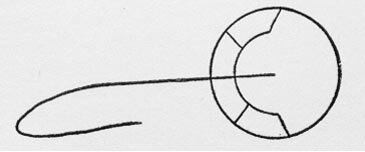

Journal of the Royal Meteorological Society, 1-157:(1)
EXTRACT from the log of the barque Lady of the Lake, by Capt. F. W. Banner:
Communicated by R. H. Scott, F. R. S.:
That, upon the 22nd of March, 1870, at Lat. 5 47' N., Long. 27 52' W., the sailors of the Lady of the Lake saw a remarkable object, or "cloud," in the sky. They reported to the captain.
According to Capt. Banner, it was a cloud of circular form, with an included semicircle divided into four parts, the central dividing shaft beginning at the center of the circle and extending far outward, and the curving backward.
Geometricity and complexity and stability of form: and the small likelihood of a cloud maintaining such diversity of features, to say nothing of appearance of organic form.
The thing traveled from a point at about 20 degrees above the horizon to a point about 80 degrees above.(2) Then it settled down to the northeast, having appeared from the south, southeast.
Light gray in color, or it was cloud-color.
"It was much lower than the other clouds."
And this datum stands out:
That, whatever it may have been, it traveled against the wind.(3)
"It came up obliquely against the wind, and finally settled down right in the wind's eye."
For half an hour this form was visible. When it did finally disappear that was not because it disintegrated like a cloud, but because it was lost to sight in the evening darkness.
Capt. Banner draws the following diagram:

[267]
1. Frederick William Banner. "Extract from log of barque `Lady of the Lake.'" Quarterly Journal of the Royal Meteorological Society, 1, 157. The object was 25 degrees, not 20, above the horizon when it first appeared. Correct quote: "It was very much lower...."
2. Sic, travelled.
3. Sic, travelled.
4. The above diagram was provided by Fort and differs slightly from the actual diagram provided by Banner.